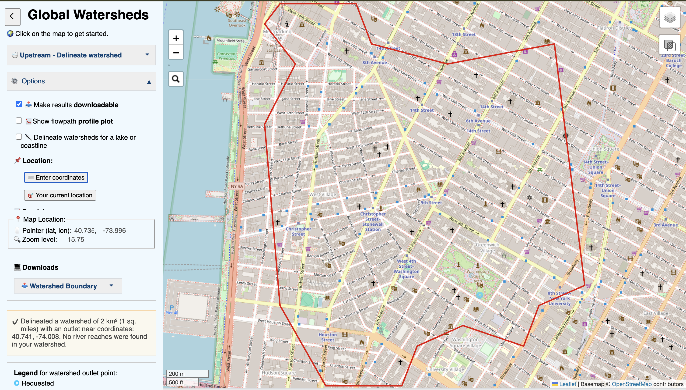
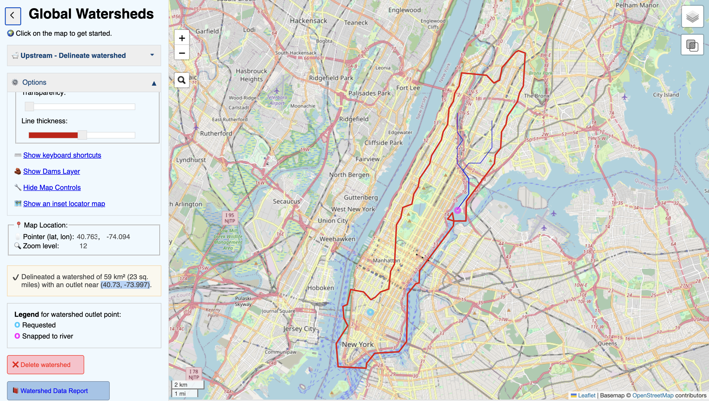

Week 05 · October 2026
Where the water goes
The question
What is the watershed around Bobst Library, New York City, actually shaped by, and how do its boundaries, scale, and water stress appear in the watershed delineation and Aqueduct maps?
The data
I used the Global Watersheds application to delineate the surface catchment around Bobst Library. The primary delineation used MERIT-Hydro (2021) at higher precision, based on a global hydrography grid with a spatial resolution of 90 metres near the equator. Catchment area is reported in square kilometres, while the outlet is recorded in latitude and longitude. MERIT-Hydro is available under either the CC BY-NC 4.0 or ODbL 1.0 licence. I also used HydroSHEDS (2013) to test whether changing the underlying dataset altered the result. For water stress, I used the Baseline Annual and Baseline Monthly layers from WRI Aqueduct 4.0 Water Risk, accessed through ArcGIS Living Atlas. The index uses HydroBASINS Level 6 sub-basins as its hydrological unit. Baseline water stress is a unitless ratio of water withdrawals to available renewable water supply, while polygon area is reported in square kilometres. The data have a baseline period of 1979–2019 and a data vintage of April 2023, so the values describe a period that ended seven years before this analysis. The layer is licensed under Creative Commons Attribution 4.0 International (CC BY 4.0) and credited to Aqueduct 4.0, World Resources Institute.
The method
I entered the Bobst Library coordinates, 40.729716, −73.996762, into Global Watersheds and delineated the catchment using MERIT-Hydro at higher precision. This setting used the approximately 90 m MERIT-Hydro grid to refine the watershed around the requested outlet. The application returned a catchment of 2 km² and moved the outlet to approximately 40.741, −74.008, about 1.6 km from the requested point. Because the application found no river reaches inside this small urban catchment, it did not display a separate snapped-to-river marker. I then changed the source dataset to HydroSHEDS as a sensitivity test; it returned a much larger catchment of 59 km², showing that the delineated boundary was highly sensitive to the dataset used. In ArcGIS Map Viewer, I selected the Aqueduct 4.0 polygon containing Bobst Library and recorded its baseline annual water-stress value, class, and area. The polygon had a water-stress value of 0.06, classified as Low (<10%), and an area of 57.93 km². I converted Bobst Library’s stated area of 39,500 m² to 0.0395 km² and divided the Aqueduct polygon area by the building area. Finally, I switched from the annual layer to the monthly layer and identified April as the lowest-stress month (0.03) and October as the highest (0.0877).
The evidence


What I found
Expectation: In Part 0, I predicted that the water would directly enter the drainage system under Washington Square Park and that the water would end up in the Hudson River. For the tap water, I predicted that it came from the Hudson River. However, NYC DEP says that the city’s supply comes from upstate reservoirs (about 100 miles away) in the Catskill, Delaware, and Croton systems, often as a blend; it cannot identify Bobst’s exact source from that general statement.
The boundary: At Bobst Library, I first applied MERIT-Hydro data with lower precision, but the system automatically shifted to higher precision. I repeated this multiple times and zoomed out the extent, but the system constantly generated the watershed with higher precision. The higher precision generated a 2 km² delineation with a reported outlet near 40.741, −74.008. The requested coordinate was 40.729716, −73.996762, so the reported outlet is approximately 1.6 km away, calculated from coordinates rounded by the app. However, no river was found in the watershed because the watershed is relatively small and both the Hudson River and the East River are excluded. Secondly, I adopted the HydroSHEDS (2013) model associated with higher precision, which generated a 59 km² delineation with a reported outlet near 40.73, −73.997, located at Wards Island Park on Randall’s Island. These two answers differed by 29 times. Thirdly, I applied USGS, but the system returned the message, “Sorry, could not get the watershed boundary,” which is because USGS hydrography is built around gauged stream reaches, and the middle of Manhattan does not contain one.
The unit: The Aqueduct record I used for Bobst Library reports baseline annual water stress of 0.06, classified as Low (<10%), for a displayed polygon of 57.93 km² (Pfafstetter ID 731300). This is an estimate of withdrawals relative to available renewable water at the sub-basin scale, not a measurement of water inside Bobst. Bobst Library has an area of 39,500 m² = 0.0395 km², so the displayed polygon is 57.93 ÷ 0.0395 ≈ 1,467 times the building’s area. Therefore, the ratio is approximately 1,467:1, or the building is about 0.0682% of the polygon. Because the nearby New Jersey polygon has a different ID (731501), those two records alone do not suggest that Bobst’s basin was split at the state border. To compare untreated connected water and unimproved water, I chose the Mississippi–Missouri Basin, Montana, where the city of Bozeman is located. It returned an untreated connected water value of 0.26, classified as Low (<10%), and an unimproved/no drinking water value of 0.02, which is exactly the same value as that of the Manhattan basin.
The crossing: According to NYC DEP, New York City’s drinking-water supply network mainly relies on water conveyed from the upstate reservoir systems toward Manhattan and Bobst (mainly from north to south), crossing the local surface-drainage boundaries shown by the watershed tool. I found this in NYC DEP’s drinking-water FAQ and water-supply description. The sources establish the direction and the citywide systems, but do not specify which reservoir supplies Bobst at a particular moment; DEP says the mix can change.
What this does not show
I am using the delineated boundary around Bobst Library to stand for where the site’s water actually goes and comes from, and it might fail because the model does not represent New York City’s pipes, tunnels, and aqueducts: it estimates where rain falling on Bobst’s roof would drain across the surface, while the building’s tap water is transported from upstate reservoirs. I am also using the basin’s baseline water stress to stand for whether water at Bobst is adequate, and it might fail because the index measures water volume across a 57.93 km² polygon—about 1,467 times the area of Bobst—while counting water as available without showing whether it is locally accessible, treated, or usable. The delineated boundary is the more dangerous proxy in this entry because its precise outline can easily be mistaken for Bobst’s complete water system, even though it excludes the infrastructure that actually supplies the building. Also, the watershed does not show where does the water type. For instance, NYC gets drink water from upstate resvoir including Catskill. Jersey City receives its potable water from the Rockaway River, a tributary of the Passaic River while Bozeman relies on snowpack for its water supply, with 80% coming from snowmelt in the Gallatin Range. However, the watershed does not differenciate the water source.